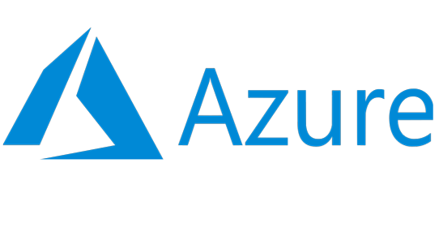

Luego de terminar mi carrera, me gustaría desarrollar para alguna marca de ropa. También quiero desarrollar UX, UI y GUI, ya sea para movil o web, o bien para ambas. Tengo en mente emprender un negocio de modelado y diseño de moda digital, aprender e implementar Machine Learning.
HISTORIAS COMPLEMENTARIAS PERO RELACIONADAS
JAX MOTO
Se trató de un proyecto de moda masculina, enfocado al enduro. Se diseñó un jersey y un hoodie. Los sistemas computacionales son importantes, puesto que de no haber contado con un software de diseño no habría podido realizar esta labor.
Vidal López, es un piloto de la escudería Prorally para la NASCAR, 50% fibra de carbono, es un corredor singular, pues lleva protesis en sus piernas. A Vidalito se le rediseñó su logotipo y se elaboraron playeras de edición límitada.
Tuve la tarea de diseñar el jersey, la playera tipo polo y la chamarra para el Team México que participó
en el International Six Days of Enduro Italia 2021, se trabajó con la Comisión Nacional de Enduro, la Federación Internacional de Motociclismo, la Federación Mexicana de Motociclismo, Coca Cola, Monkey Bussines, Jax Moto y Sponyat-Jet, quienes fueron patrocinadores.
Hace dos años que comencé a trabajar para esta empresa de ropa deportiva para mujer, sin embargo, le debo mucho de lo que he aprendido a hacer a este trabajo, pues aquí pasé de la fotografía amateur a una un tanto más profesional. Del mismo modo todo lo relacionado a la producción de contenido audiovisual. También aquí tuve contacto con la administración de sitios web elaborados a partir
del Drag N' Drop, al verme muy limitada con lo que podía hacer, decidí retomar mi carrera y enfocarme más al desarrollo web.
Participé en este curso de invierno, por parte de Microsoft, donde el tema es comprender los fundamentos de Azure y certificarme en AZ-900, tiene un programa interesante sobre IoT, Machine Learning e IA, por eso quiero certificarme en la AZ-900.

ORACLE/ALURA ONE
El programa Oracle Next Education tiene muy buenos programas de estudio, sobre todo de desarrollo web, me gustaría en un futuro ser asesora en esa plataforma.
 INICIO
INICIO